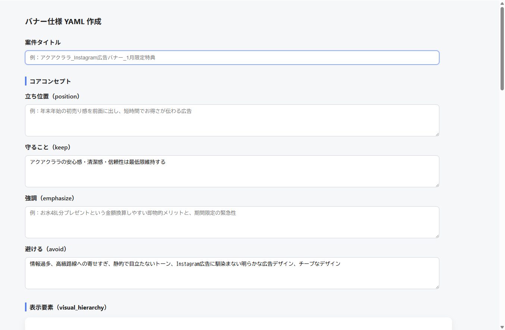
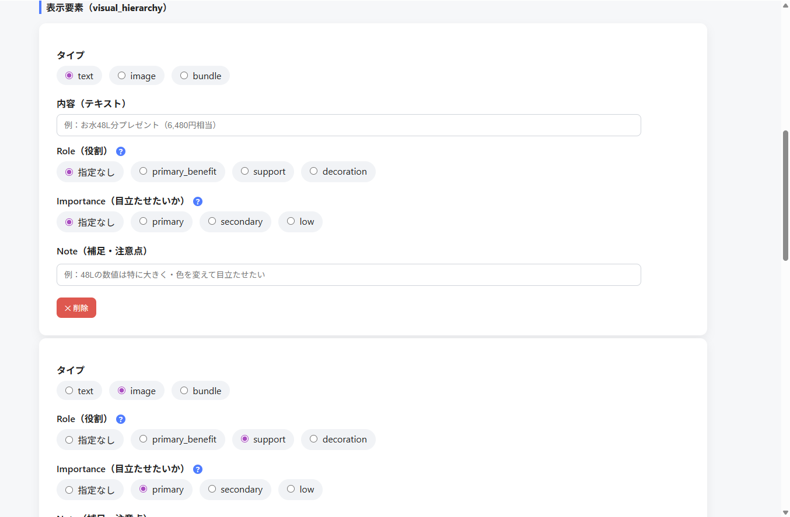
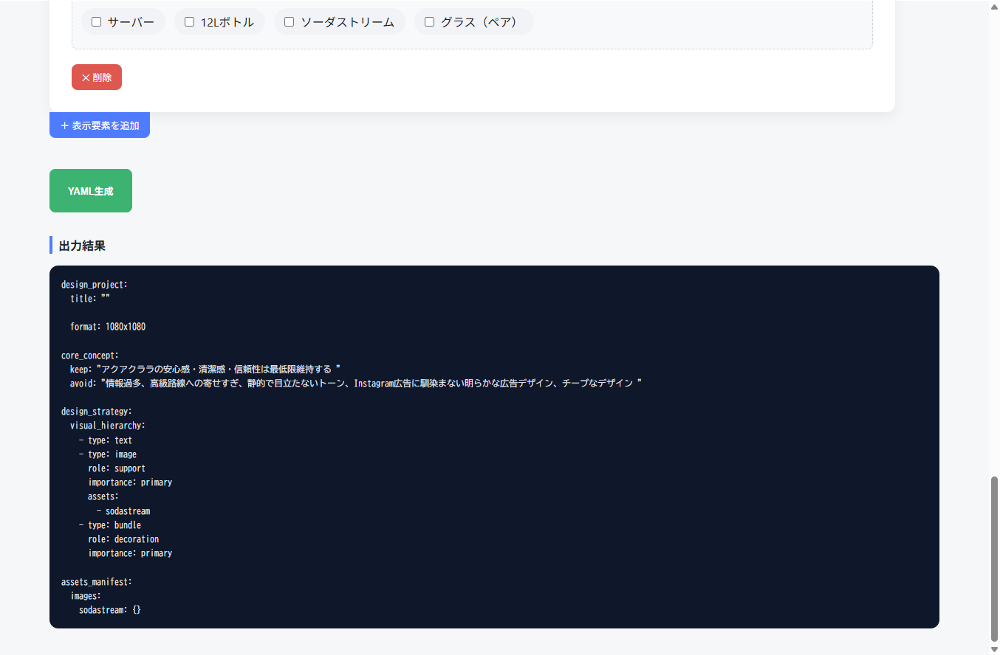

この事例のポイント
広告バナーを AI で生成する際、「テキストをもっと大きく」「この画像を目立たせて」といったデザイン意図をうまく伝えるのは意外と難しいです。自然言語のプロンプトだと、AIが意図を汲み取れずに何度もやり直し…ということが起きがちです。
そこで、デザイン要素の 優先度・役割・種類 を YAML形式 で構造化して渡すことで、AI（nanobananaPro / Taskyなど）がデザイン意図を正確に理解できるようにしました。そのYAMLを 誰でもかんたんに作れるフォーム型ツール を Google Apps Script（GAS）で開発した事例です。
何ができるツールなのか
ブラウザ上のフォームに必要な情報を入力するだけで、広告バナーの仕様が 構造化されたYAML として出力されます。
入力する内容
フォームの上部では、バナー全体の方向性を設定します。
- 案件タイトル — 例：アクアクララ_Instagram広告バナー_1月限定特典
- コアコンセプト
- 立ち位置（position） — 広告の基本的なスタンス
- 守ること（keep） — ブランドとして絶対に外せない要素
- 強調（emphasize） — 今回特に打ち出したいポイント
- 避けること（avoid） — やってはいけない表現やトーン

表示要素の設定
次に、バナーに載せる個々の要素を1つずつ設定します。
- タイプ — text（テキスト）/ image（画像）/ bundle（まとめ要素）
- Role（役割） — primary_benefit / support / decoration などから選択
- Importance（目立たせたいか） — primary / secondary / low から選択
- 画像アセット — 使用する画像素材をチェックボックスで選択
- Note（補足） — 「48Lの数値は特に大きく・色を変えて目立たせたい」等の自由記述
要素は「＋ 表示要素を追加」ボタンで好きなだけ追加でき、不要なものは削除ボタンで消せます。

YAML出力
「YAML生成」ボタンを押すと、入力内容が構造化されたYAMLとして出力されます。

このYAMLをそのまま Gemini や Taskyに貼り付けるだけで、デザイン要素の優先度を意図した通りに反映した広告画像を生成できます。
ツールの開発方法
このツール自体も AI を活用して作りました。
- Gemini とチャットで仕様を相談 — 「こういうフォームが欲しい」「YAMLのフォーマットはこうしたい」とやりとりしながら仕様を固めた
- Gemini にスクリプトを出力してもらう — Google Apps Script のコードを Gemini に生成させた
- GAS にそのまま実装 — 出力されたコードを Google Apps Script に貼り付けてデプロイ
つまり、ツールの企画→仕様決定→実装まで、ほぼ Gemini との対話だけで完結 しています。
実際の活用
- 生成したYAMLプロンプトは、nanobananaPro を使った Tasky の開発チームに提供
- Tasky 側でこのYAMLフォーマットをベースに広告画像生成の仕組みを構築
- 2026年1月配信のアクアクララ広告クリエイティブに実採用
成果
- フォーム入力→YAML出力の流れにより、プロンプト作成の属人性を排除
- デザイン意図が構造化されるため、AIが優先度を正しく解釈できるようになった
- 自然言語プロンプトで起きがちな「何度もやり直し」が大幅に減少
- 実案件（2026年1月配信）で採用され、実運用に乗っている
再利用可能ポイント
- YAML構造は汎用的 — アクアクララ以外の案件でも、フォームの項目を変えるだけで転用可能
- GAS＋HTMLで完結 — 特別なサーバーやインフラ不要。Googleアカウントがあればすぐ使える
- Gemini でツール開発 という手法自体が再利用可能 — 同様の業務効率化ツールを短期間で量産できる
課題・改善点
- 現状はアクアクララ案件に特化した項目設定になっているため、他案件用のテンプレート拡充が必要
- 画像アセットの管理（登録・更新）がまだ手動
- YAMLフォーマットのバージョン管理をもう少し整備したい